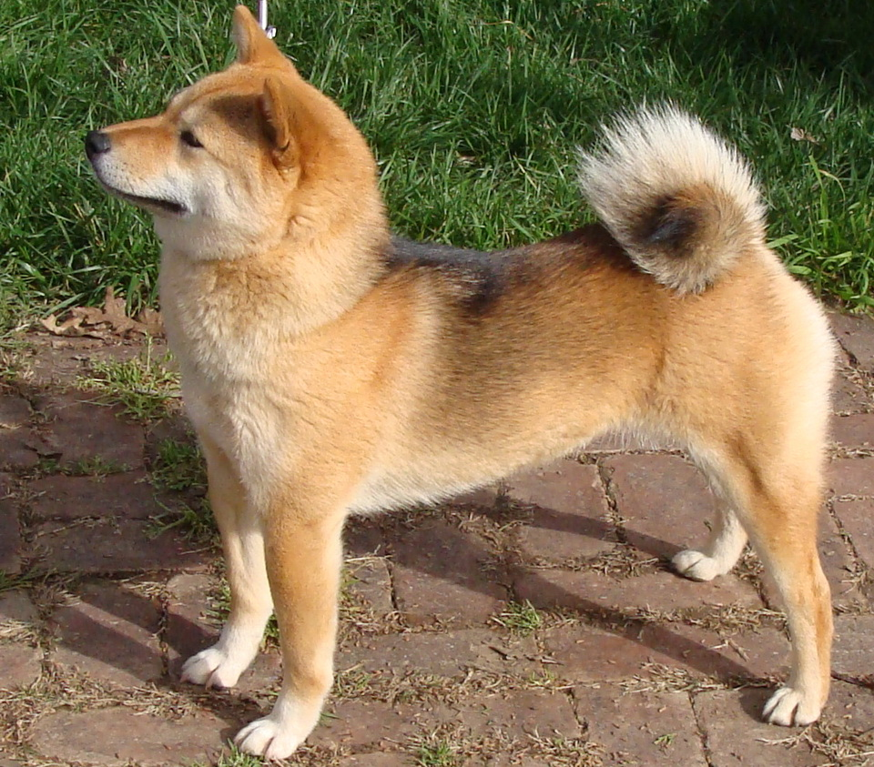
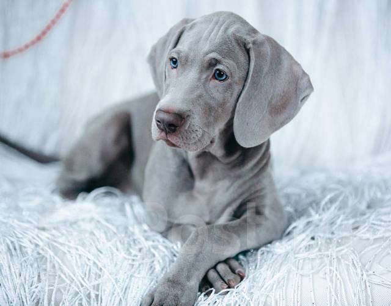
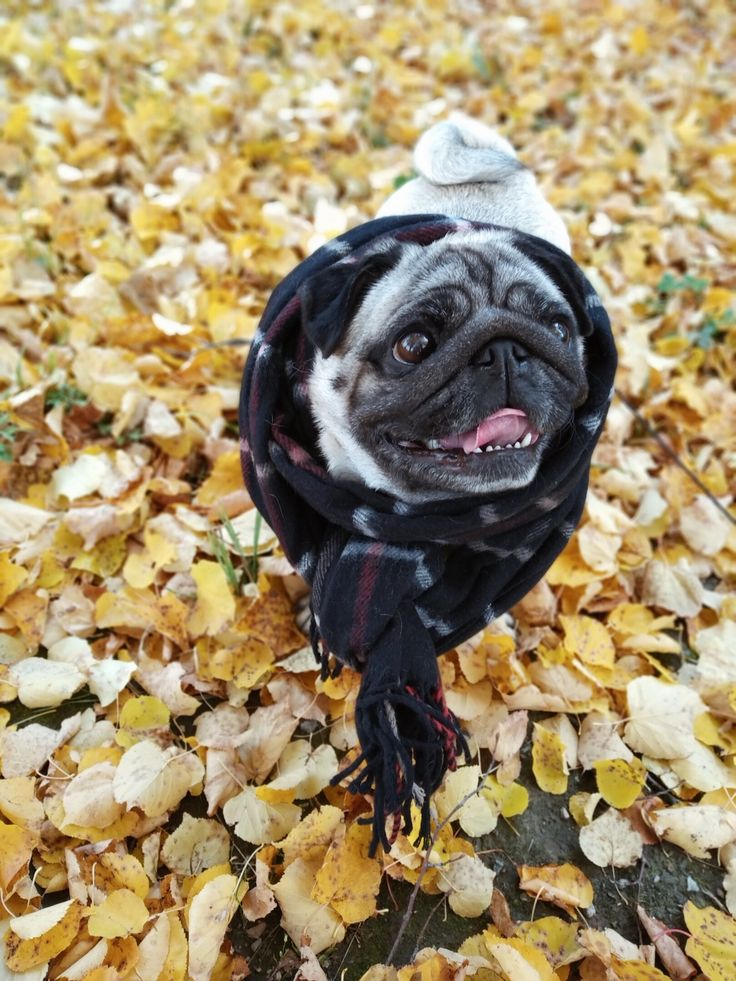

Топ-5 охотничьих пород
- Такса
- Английский спрингер-спаниель
- Бигль
- Русская псовая борзая
- Веймаранер
Фан-сайт для тех, кто любит собак и хочет знать о них всё 🐾
Собака (Canis familiaris) — первое прирученное животное. Более 400 пород официально признаны международными кинологическими федерациями. Самая маленькая порода — чихуахуа, самая крупная — ирландский волкодав.
Раньше собак держали только для охраны и охоты
Сейчас это полноправные члены семьи.
Первая тройка — бордер-колли, пудель, немецкая овчарка



| Порода | Активность | Линька | Сложность дрессировки | Для новичка? |
|---|---|---|---|---|
| Джек-рассел-терьер | Очень высокая | Низкая | Средняя | Нет |
| Требует много движения, иначе разрушает дом | ||||
| Золотистый ретривер | Высокая | Высокая | Лёгкая | Да |
| Французский бульдог | Низкая | Средняя | Лёгкая | Да |
| Проблемы с дыханием, не переносит жару | ||||
| Шиба-ину | Средняя | Высокая | Сложная | Нет |
| * Характер зависит от воспитания и наследственности | ||||